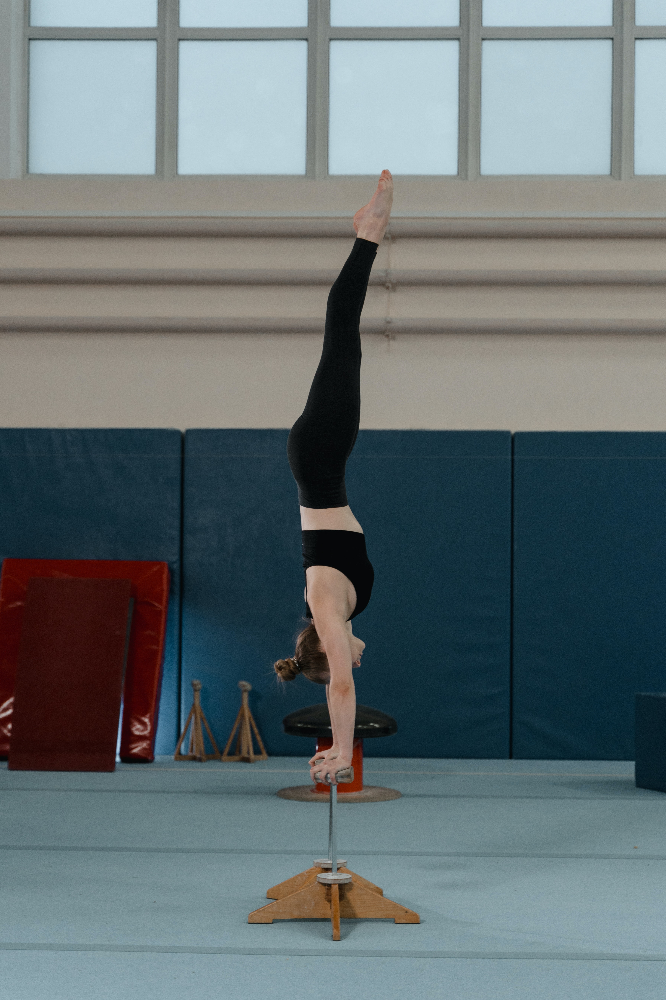

Es la capacidad de mantener o recuperar la posición del cuerpo durante la ejecución de posiciones estáticas o en movimiento. Depende del aparato vestibular, del centro de gravedad y los puntos de apoyos. Hay equilibrio en todas las actividades de control corporal, postural y sobre todo en las acciones relacionadas con la gimnasia.
Un ejemplo claro de su aplicación en este deporte es la ejecución de una rutina en la barra de equilibrio. Esta es una disciplina que requiere precisión y control para realizar una serie de acrobacias y posturas sobre una barra estrecha y elevada. Durante la ejecución, las gimnastas deben mantener un equilibrio preciso mientras realizan movimientos, como posiciones estáticas, giros y saltos con la finalidad de mostrar control y estabilidad.
El equilibrio implica una distribución correcta del peso corporal, una alineación adecuada del cuerpo y una activación muscular precisa. Las gimnastas deben tener una conciencia corporal excepcional para ajustar constantemente su posición y realizar correcciones para mantener el equilibrio en todo momento. Además, requiere una combinación de fuerza, flexibilidad y coordinación para ejecutar los elementos de manera fluida.
Un buena ejecución en la barra no solo es fundamental para evitar caídas sino que también es un aspecto evaluado por los jueces ya que demuestra el control y la habilidad técnica de la gimnasta. Por lo tanto, el entrenamiento del equilibrio es esencial en la preparación de esta disciplina, incluyendo ejercicios específicos de esta capacidad, trabajos de fuerza y estabilidad así como la mejora de la concentración y la confianza en sí mismos.

Imagen tomada de Pexels
El aparato vestibular es parte del sistema sensorial humano y se encuentra en el oído interno. Es responsable de detectar y regular el equilibrio, la posición espacial y los movimientos de la cabeza.